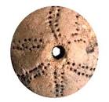
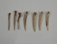
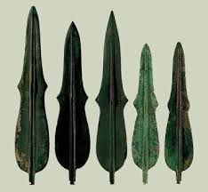
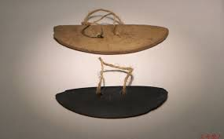
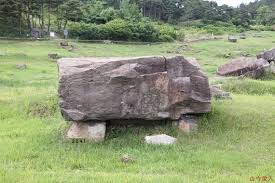
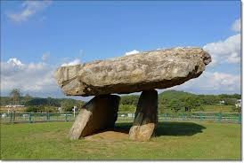
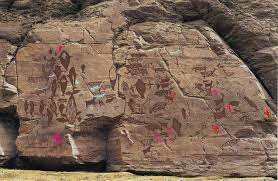
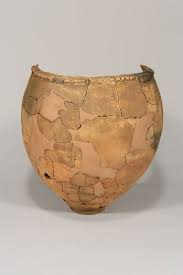
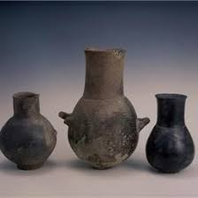

구석기: 약 70만년전, 선사시대, 빙하기
사용도구: 뼈도구(골각기), 뗀석기 (아슐리안주먹도끼)
유물출토지역: 연천전곡리,
~동굴(흥수아이),
생활형태: 사냥, 채집, 어로, 이동생활,
주거형태: 동굴, 막집
계급: 평등, 무리생활
중석기: 선사시대, 빙하기 종료 즈음
사용도구: 화살, 창 = 잔석기, 슴베찌르개(이음도구)
유물출토지역: 충북 단양 수양개, 공주 석장리, 순천 월평,
신석기: 8000년 전, 선사시대
사용도구: 빗살무늬토기, 이른민무늬토기, 덧무늬토기, 간석기, 가락바퀴, 뼈바늘, 이음낚시바늘

유물출토지역: 서울 암사동, 부산, 황해, 양양, (강가, 바닷가)
생활형태: 농경의 시작(조,피,수수), 사냥, 채집, 어로(그물), 바느질, 의복제작, 정착생활
주거형태: 방형 또는 원형의 움집, 중앙에 화덕이 있음.
계급: 씨족사회
종교: 애니미즘, 토테미즘, 샤머니즘
예술: 조개껍데기, 치레걸이
청동기: 2000년 전? 1500년전?, 고조선
사용도구: 미송리식토기, 민무늬토기, 비파형동검, 거친무늬거울(청동거울:제사용, 권위), 거푸집, 반달돌칼 (벼농사), 붓

유물출토지역: 강화도-고인돌, 충남 부여 송국리, 의주 미송리, 울주 대곡리, 경기 여주 흔암리,고령 장기리 (구릉지)
생활형태: 농업의 발달(벼농사의 시작), 잉여생산물로 인해 사유재산이 생김.
주거형태:
계급: 족장의 등장, 선민사상,
매장형태: 고인돌의 등장, 돌널무덤

종교: 애니미즘, 토테미즘, 샤머니즘
예술: 벽화 (울주반구대암각화)

무역: 중국과의 교류, 명도전(춘추전국), 반량전(진), 오수전(한)
철기: 기원전 5세기, (위만조선, 부여,고구려,삼한)
사용도구: 민무늬토기, 덧띠무늬, 검은간토기, 세형동검, 잔무늬거울, 청동도구의 의기화,무기와 농기구의 철기화,

유물출토지역:
생활형태: 농업생산량의 증대, 전쟁의 활성화, 국가의 생성
주거형태:
계급:
매장형태: 독무덤, 널무덤
종교:
예술: